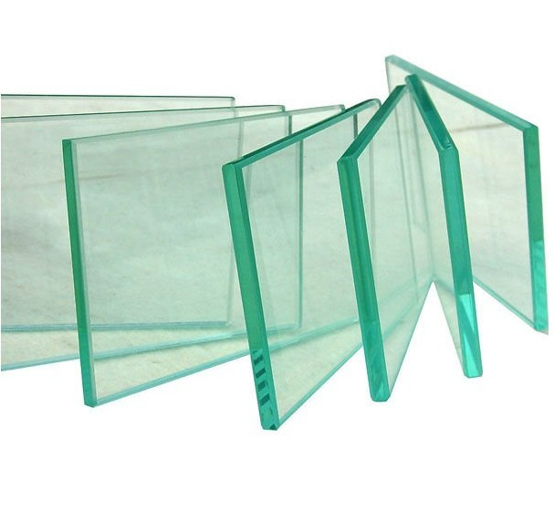

Sheet glass manufacture: the float process
Glass, which has been made since the time of the Mesopotamians and Egyptians, is little more than a mixture of sand, soda ash and lime. When heated to about 1500 degrees Celsius (°C) this becomes a molten mass that hardens when slowly cooled. The first successful method for making clear, flat glass involved spinning. This method was very effective as the glass had not touched any surfaces between being soft and becoming hard, so it stayed perfectly unblemished, with a 'fire finish'. However, the process took a long time and was labour intensive.
Nevertheless, demand for flat glass was very high and glassmakers across the world were looking for a method of making it continuously. The first continuous ribbon process involved squeezing molten glass through two hot rollers, similar to an old mangle. This allowed glass of virtually any thickness to be made non-stop, but the rollers would leave both sides of the glass marked, and these would then need to be ground and polished. This part of the process rubbed away around 20 per cent of the glass, and the machines were very expensive.
The float process for making flat glass was invented by Alistair Pilkington. This process allows the manufacture of clear, tinted and coated glass for buildings, and clear and tinted glass for vehicles. Pilkington had been experimenting with improving the melting process, and in 1952 he had the idea of using a bed of molten metal to form the flat glass, eliminating altogether the need for rollers within the float bath. The metal had to melt at a temperature less than the hardening point of glass (about 600°C), but could not boil at a temperature below the temperature of the molten glass (about 1500°C). The best metal for the job was tin.
The rest of the concept relied on gravity, which guaranteed that the surface of the molten metal was perfectly flat and horizontal. Consequently, when pouring molten glass onto the molten tin, the underside of the glass would also be perfectly flat. If the glass were kept hot enough, it would flow over the molten tin until the top surface was also flat, horizontal and perfectly parallel to the bottom surface. Once the glass cooled to 604°C or less it was too hard to mark and could be transported out of the cooling zone by rollers. The glass settled to a thickness of six millimetres because of surface tension interactions between the glass and the tin. By fortunate coincidence, 60 per cent of the flat glass market at that time was for six-millimetre glass.
Pilkington built a pilot plant in 1953 and by 1955 he had convinced his company to build a full-scale plant. However, it took 14 months of non-stop production, costing the company £100,000 a month, before the plant produced any usable glass. Furthermore, once they succeeded in making marketable flat glass, the machine was turned off for a service to prepare it for years of continuous production. When it started up again it took another four months to get the process right again. They finally succeeded in 1959 and there are now float plants all over the world, with each able to produce around 1000 tons of glass every day, non-stop for around 15 years.
Float plants today make glass of near optical quality. Several processes - melting, refining, homogenising - take place simultaneously in the 2000 tonnes of molten glass in the furnace. They occur in separate zones in a complex glass flow driven by high temperatures. It adds up to a continuous melting process, lasting as long as 50 hours, that delivers glass smoothly and continuously to the float bath, and from there to a coating zone and finally a heat treatment zone, where stresses formed during cooling are relieved.
The principle of float glass is unchanged since the 1950s. However, the product has changed dramatically, from a single thickness of 6.8 mm to a range from sub-millimetre to 25 mm, from a ribbon frequently marred by inclusions and bubbles to almost optical perfection. To ensure the highest quality, inspection takes place at every stage. Occasionally, a bubble is not removed during refining, a sand grain refuses to melt, a tremor in the tin puts ripples into the glass ribbon. Automated on-line inspection does two things. Firstly, it reveals process faults upstream that can be corrected. Inspection technology allows more than 100 million measurements a second to be made across the ribbon, locating flaws the unaided eye would be unable to see. Secondly, it enables computers downstream to steer cutters around flaws.
Float glass is sold by the square metre, and at the final stage computers translate customer requirements into patterns of cuts designed to minimise waste.
Questions 1-8
Complete the table and diagram below.
Choose NO MORE THAN TWO WORDS from the passage for each answer.
Write your answers in boxes 1-8 on your answer sheet.
Early methods of producing flat glass
|
Method |
Advantages |
Disadvantages |
|
1
|
• Glass remained 2 |
• Slow • 3 |
|
Ribbon |
• Could produce glass sheets of varying 4 • Non-stop process |
• Glass was 5 • 20% of glass rubbed away • Machines were expensive |

6
7
8
Questions 9-13
Do the following statements agree with the information given in Reading Passage 1?
In boxes 9-13 on your answer sheet, write
TRUE if the statement agrees with the information
FALSE if the statement contradicts the information
NOT GIVEN if there is no information on this
9 The metal used in the float process had to have specific properties.
10 Pilkington invested some of his own money in his float plant.
11 Pilkington’s first full-scale plant was an instant commercial success.
12 The process invented by Pilkington has now been improved.
13 Computers are better than humans at detecting faults in glass.
---End of the Test---
Please Submit to view your score, solution and explanations.